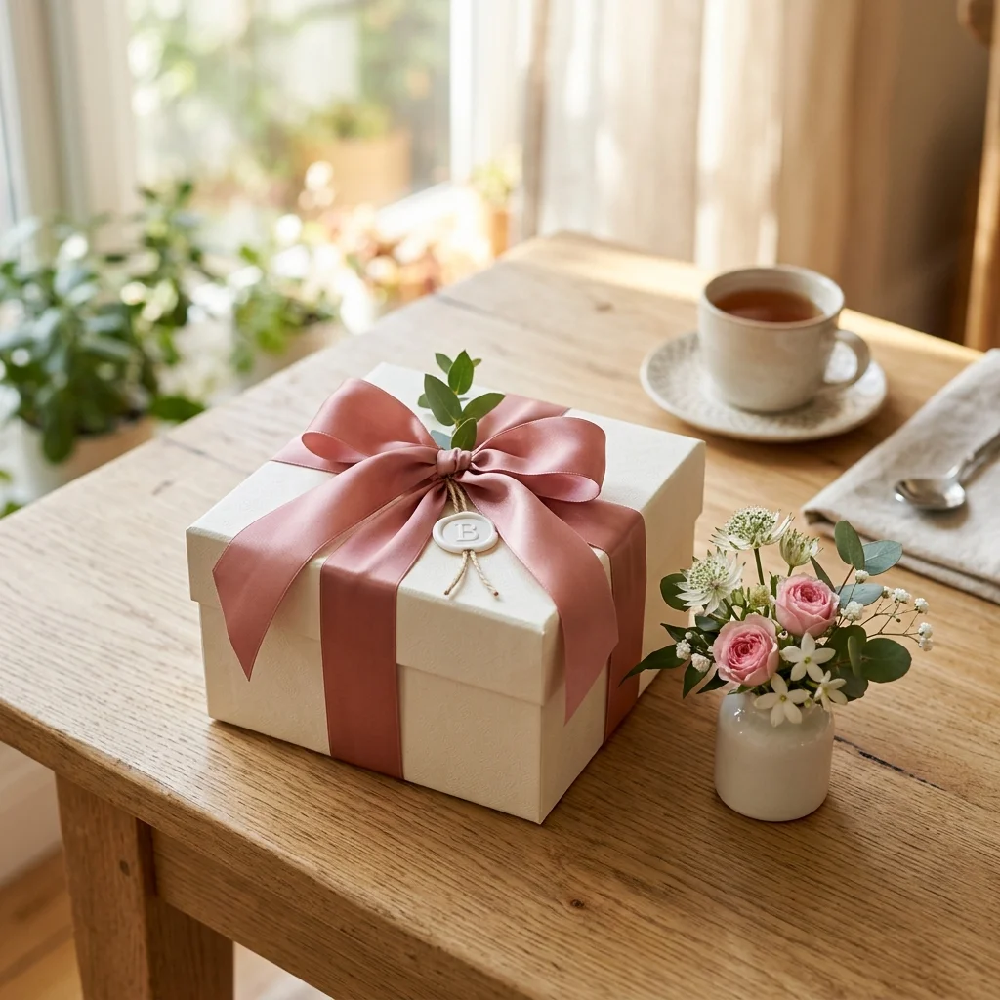
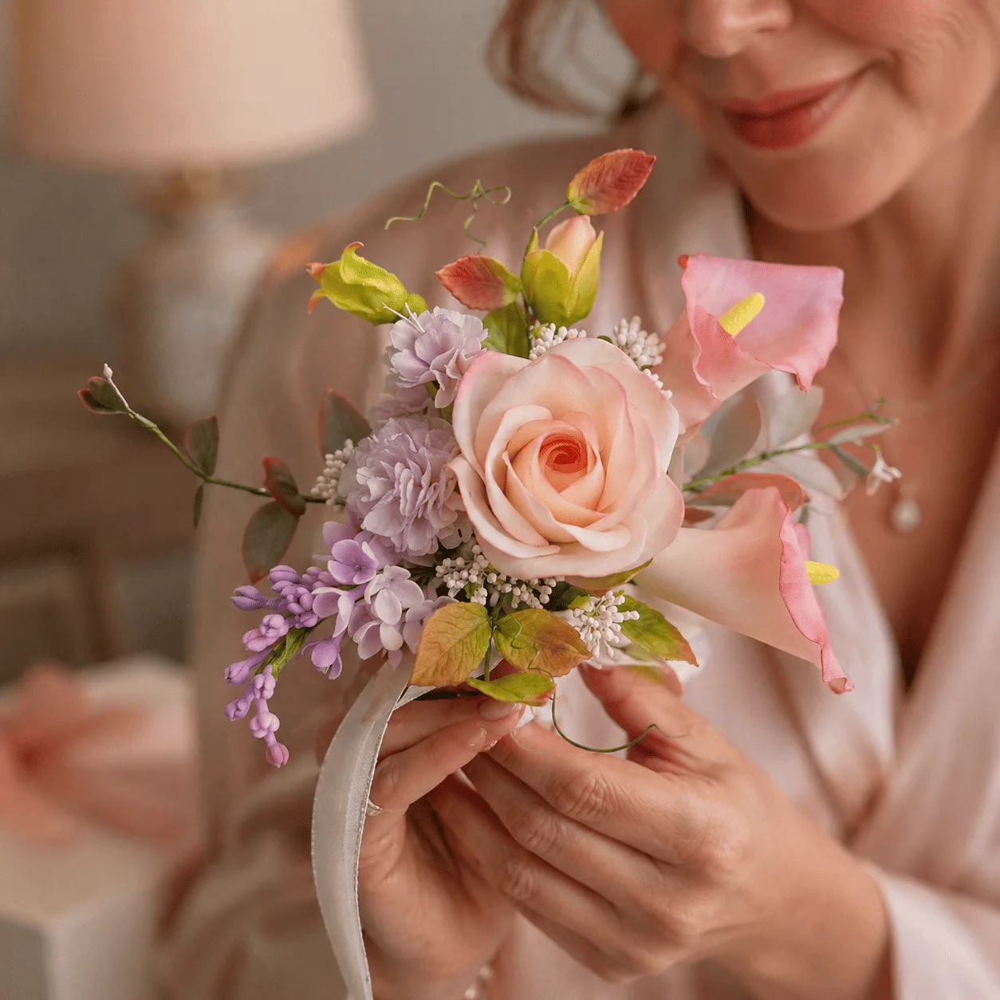
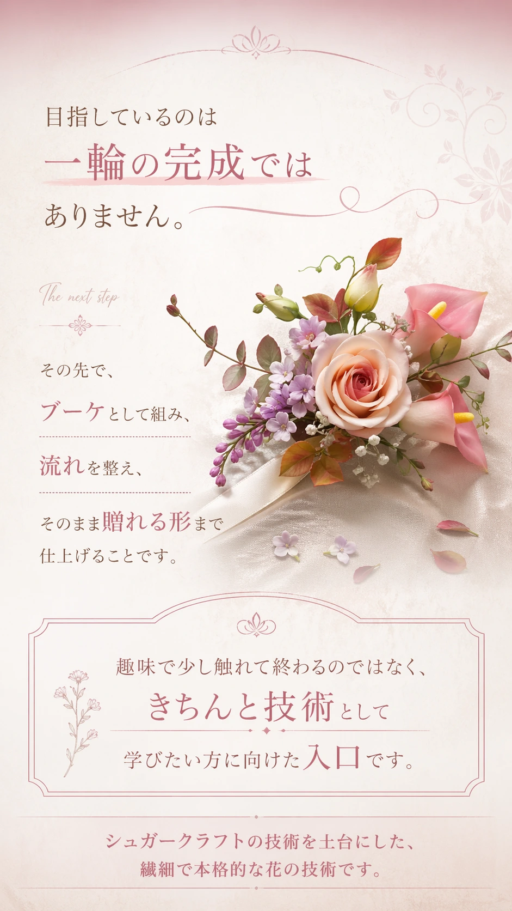
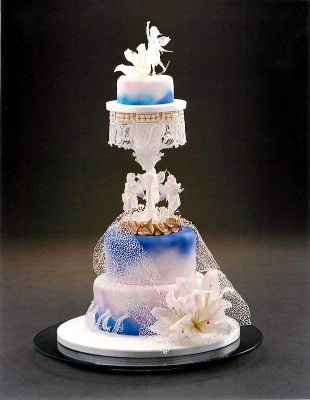
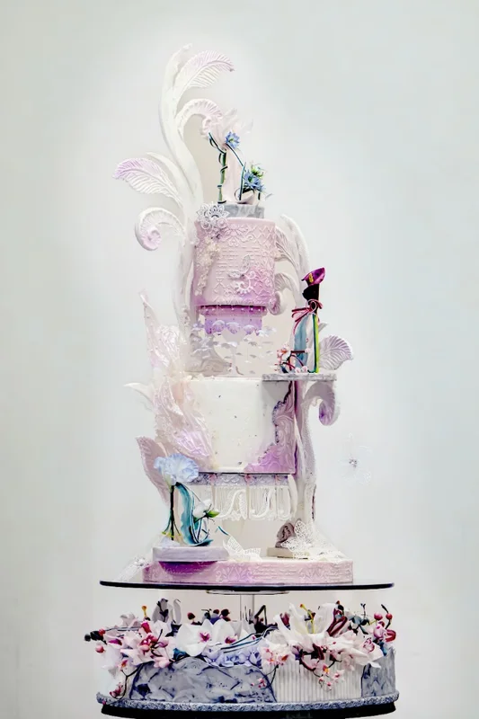
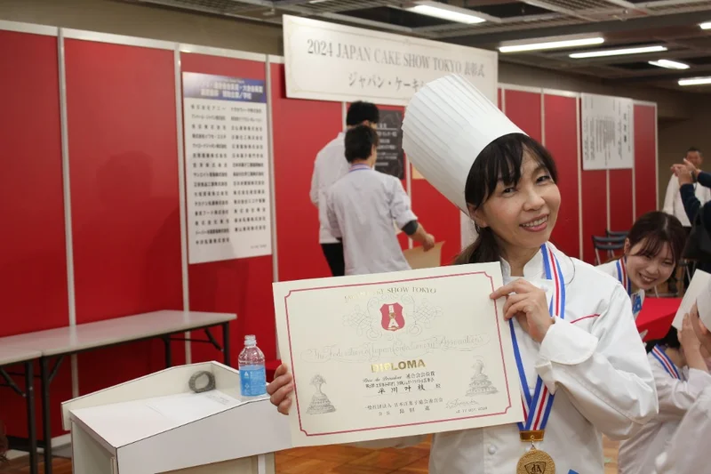

Sugarflower
Lesson
母の日、誕生日、記念日に。
既製品ではなく、
自分の手で作った上品な花で
想いを届けたい方へ
スターターキット付き。
オンラインで学べるシュガーフラワー体験講座。
初めての方でも、一輪のライラック制作から。
※オンライン受講です。 ※少人数サポートです。
本講座へ進まれる場合は、今回の受講料を割引します。
日程や受講前のご不安がある方は、
LINEでご確認いただけます



※体験講座受講後に本講座へ進まれる場合は、今回の受講料を本講座受講料から割引いたします。
「開催日程」
5月22日（金）10:00〜13:00 ／
5月23日（土）10:00〜13:00
ライラック制作／各回3時間
大切な日に、気持ちを込めたものを贈りたい。
でも、相手に負担なく、美しく、想いが伝わるものを選びたい。
そんな繊細な感覚を持つ方のために作りました。

まずは一輪から。
でも、そこで終わる講座ではありません。
この体験講座で作るのは、ブーケの中の一輪を担う「ライラック」です。
小さな花が集まり、やわらかな表情を作るライラックは、繊細さと上品さを感じられるお花です。
初めての方が、シュガーフラワーならではの薄さや花びらの表情を学ぶ入口としても向いています。
今回は、ライラック一房と、より美しく仕上げるための葉まで作っていきます。

ライラック

ブーケへ
ただし、この講座は一輪を作って終わるためのものではありません。
その先にある
- 束ねること
- 整えること
- 贈れる形に仕上げること
へ進むための、きちんとした入口です。

何を揃えたらいいのかわからない。
途中で止まってしまいそう。
オンラインでついていけるか不安。
そんな最初のハードルを、できるだけ減らした状態で始められるようにしています。
日程や受講前のご不安がある方は、
LINEでご確認いただけます
体験講座のステップ
約3時間のレッスンで、
ライラック一房と葉を仕上げていきます。
イメージの確認
最初に、レッスン全体の流れと完成イメージを確認します。
基本の形づくり
ペーストを整えながら基本の形を作り、花びらの表情をつけていきます。
房の成形と葉の制作
ワイヤーを通して一輪のお花に仕上げたあと、花やつぼみをまとめながらライラックらしい房の形まで整えます。そして、お花を際立たせる葉っぱの成型を行います。
仕上げ
全体を確認しながら、より美しく見せるためのフィードバックを行います。
ここは誤解してほしくないところです
この講座で学ぶのは、ただ可愛いものを作るための単発体験ではありません。
しかも、

※これが実際の本講座
『シュガーフラワービギナー講座』で
完成するブーケの写真です。
この体験講座の先で、
実際にこんな変化が
起きています
この体験講座は、ただ一輪を作って終わるためのものではありません。
その先にある「シュガーフラワービギナー講座」では、
束ねること。流れを整えること。
ブーケとして仕上げることまで学んでいきます。
実際に受講された方からは、
こんなお声をいただいています。
まずは、受講生のダイジェスト動画でご覧ください。

※シュガーフラワービギナー講座
受講生のお声です。
最初は不安だった方が、
手厚いサポートの中で楽しみに
変わっていったことや、
技術として身につく実感を感じて
いただけると思います。
シュガーフラワーが、
特別な日
と相性がいい理由
シュガーフラワーは、
英国のウェディング文化の中で育まれてきた、
祝福を美しく形にする技術です。
ただ可愛いだけではなく、
節目の日にふさわしい
上品さがあります。

ウェディングケーキまわりの装飾。
ウェルカムボード。
大切な人へのお祝い。
そうした場面で、
気持ちを込めながらも、
押しつけがましくならずに、
美しく想いを届ける
ことができます。
娘さんの結婚式を、
自分の手で祝いたい。
そんな願いとも、
とても相性のいい技術です。
お申し込みはSquareの決済ページで完了します。
決済後、LINEで受講日を個別に調整します。
スターターキットの発送先もLINEで確認します。
指導は、実績と経験のある
講師が行います
この講座を担当するのは、
エコールシュクレ主宰の
平川かなえ先生です。
日本シュガーアートドール協会
シュガーフラワー専任講師。
目白大学短期大学製菓学科
シュガークラフト講師。
つくば栄養医療調理製菓専門学校
シュガークラフト講師として、
長く指導に携わってこられました。
英国での学びも重ね、国内外の
コンペティションでも高い評価を
受けています。
2024年には、
ジャパンケーキショー
シュガークラフト部門
グランプリ、連合会会長賞を
受賞されています。
高い技術を持つだけではなく、
初めての方が迷わず進めるように、
順番と流れを整えて指導して
くださる先生です。




▼ 体験講座「ライラック」
のご紹介（動画）
ご受講について
シュガーフラワービギナー体験講座
「ライラック制作＋スターターキット付き」
受講料
税込 7,980円
開催日程
5月22日（金）10:00〜13:00
5月23日（土）10:00〜13:00
※内容は両日とも同じです。
※ライラック制作／各回3時間です。
申込締切：5月16日（土）まで
各回8名までの少人数開催です。
丁寧なサポートを大切にしているため、
定員を絞ってご案内しています。
この講座には、ライラック制作レッスンに
加えて、スターターキットが含まれています。
今回お届けするスターターキットは、
その後の「シュガーフラワー
ビギナー講座」でも
そのままお使いいただけます。
さらに、体験講座ご受講後に
本講座へ進まれる場合は、
今回の受講料を
本講座の受講料から
割引いたします。
つまり、今回の体験は
その場限りのお試しではなく、
本格的に学ぶための入口です。
お申し込み前にご確認ください
- このボタンの先は、Squareの決済ページです。
- 会員登録は不要で、クレジットカードなどで決済できます。
- 決済完了後、LINEで受講日の調整とキット発送先の確認を行います。
- キット発送後のキャンセルはお受けできません。
▼ スターターキットのご紹介（動画）
お届けするキット内容
日程や受講前のご不安がある方は、
LINEでご確認いただけます
Squareでのお申し込み後の流れ
Squareで決済・LINE登録
Squareで申込・決済が完了したあと、LINEへご登録いただきます。
日程調整とキット発送
LINE上で、受講日の調整とスターターキットの発送先確認を行います。
オンライン受講
キット到着後、オンラインで体験講座をご受講いただきます。
受講に必要なご案内も、LINEでお送りします。
スマホだけでもご受講は可能です。
ただ、できればパソコンとスマホの
両方があると、手元を見せたり、
お顔を見て話したりしやすくなります。
サポートについて
- 録画視聴があります。視聴期限はありません。
- あとから何度でも見返していただけます。
- この体験レッスンを再開催する場合は、
無料で何回でも再受講していただけます。 - 個別補講はありませんが、ご質問は
チャットやLINEで受け付けています。
わからないまま終わりにくいように、
受講後のフォローも整えています。
よくある質問
この体験講座は、初めての方にもご参加いただけるように設計しています。必要な道具はスターターキットとしてお届けしますので、何を揃えればよいかわからないまま止まってしまう心配もありません。
うまくいかない理由の多くは、器用さよりも「完成までの順番」がわからないことにあります。
この体験講座では、流れに沿って迷わず進めていけるように設計しています。ご質問は、チャットやLINEで受け付けています。
まずは、シュガーフラワーの世界に触れていただけたらと思っています。その上で、もっと先へ進みたいと感じられた方にだけ、本講座をご案内しています。
決済完了後、LINEで受講日とキット発送先を確認します。
スターターキットの到着時期もふまえて、受講日をご案内します。
会員登録なしで、Square決済ページからお申し込みできます。
決済後、LINEで受講日とキット発送先を確認します。
ご不明点がある方は、決済前にご確認ください。
まだ申込までは迷う方へ
ここまでお読みいただき、
ありがとうございます。
体験講座が気になっているけれど、
もう少し作品例を見てから
決めたい方。
日程や準備を確認しながら、
あらためて検討したい方。
そんな方へ向けて、
LINEでもご案内をお届けしています。
募集開始のお知らせや、
作品の雰囲気がわかる情報。
ご質問の受付をご希望の方は、
こちらからご登録ください。
※体験講座に申し込むかどうかは、
LINE登録後にゆっくりご検討いただけます。
最後に
きれいに整った既製品も素敵です。
でも、
大切な日には、
もう少し自分の気持ちが乗ったものを
選びたくなることがあります。
結婚式のような人生の節目にも。
大切な人へのお祝いにも。
そんなときに、重たくならずに、
でもちゃんと想いが伝わる形を、
自分の手で作れたら素敵ですよね。
その最初の一歩が、この体験講座です。
まずは、ライラック制作から
シュガーフラワーの入口を
体験してみてください。
一輪のライラック作りを、
まずは体験講座で始めてみてください。
お申し込みはSquareの決済ページで完了します。
決済後、LINEで受講日とキット発送先を確認します。
会員登録なしでお申し込みできます。
申込締切までにお手続きください。